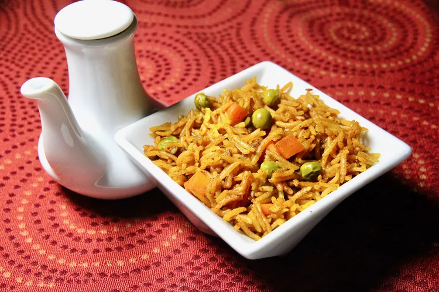

Pilau Recipe

Description
This is a tasty Indian side dish made easily and quickly in the Instant Pot®.
Ingredients
1 tablespoon vegetable oil
½ teaspoon cumin seeds
¼ cup diced red onion
¾ tablespoon garam masala
½ teaspoon ground turmeric
½ teaspoon salt
1 ½ cups vegetable broth
1 cup uncooked basmati rice, rinsed and drained
½ cup frozen peas and carrots
1 bay leaf